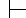
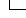

Menu
Página principal
Gerenciador de Portaria

Acesso ao Laboratorio

Saida do Laboratorio
Gerenciador de Licenças
Cadastro
relatorios
Controle de copias
contabilza copias
Conta no SI
cadastra usuario
modifica usuario
Gerenciador Sala de Leitura
Emprestimos
Livros
Contas especiais
Criar/apagar contas especiais
Cadastro de maquinas
Cadastrar Computador
Gerenciador do Sis. de Info.
Adicionar Módulo
Modificar Módulo
Creditos
Creditos
Gerenciador Almoxarifado
Adicionar Equipamento
Consultar Equipamento
Incluir categoria
Incluir convênio
Modificar Equipamento
Retirada de Equipamento
Gerenciador de rede
altera dados de maquinas
Pesquisa
Listas de mails do MAT
Criar/atualizar listas
Gerenciador de Contas
Criar Conta
Modificar Conta
Aliases
Cria/Atualiza alias
coordenação Equivalências
Alocação professor/disciplina para aproveitamentos
Correção de equivalências
Processos de equivalencia/aproveitamentos
Gerenciador de Usuarios
Adicionar Usuario
Ajuda
modifica usuario
Pesquisa de usuários
Servidor Administrativo
Ajuda
Criar Documento
Criar modelo de documento
Editar Rascunho
Inlcuir novo destino (Oficio externo)
Upload de anexos de documentos
Vinclulação de UnBDoc
Visualização de anexos de documentos
Visualizar documentos
Aproveitamento de Estudos
Agendamento/resultados de exames
Cadastro de processos de Aproveitamento
Protocolo de secretaria
seminario
Inscrição em programa da Pós-Graduação
Envio de mensagens de atualização de senha e conta
manda para todos os recomendantes
Relatórios de inscrições nos cursos de Pós-Graduação
Relatório de homologação
Lista de ofertas do MAT: criação
Atuações no Noturno/prioridades
Atualização da lista provisória
Corrige escolha do professor
Criar nova lista de ofertas
Cria um esboço da lista de ofertas (alocação de professores)
Imprime atendimento às prioridades do professor
Inclusão de nova disciplina/turma
Lista de ofertas do MAT: atualização/impressão
Atualiza a lista do e-mural
Atualização da lista de Ofertas
Impressão da Lista de ofertas
Resoluções do MAT
Editar/Criar resolução
Procurar/Visualizar resoluções
Magistral
Criação de disciplina magistral
Grupos de aulas teóricas